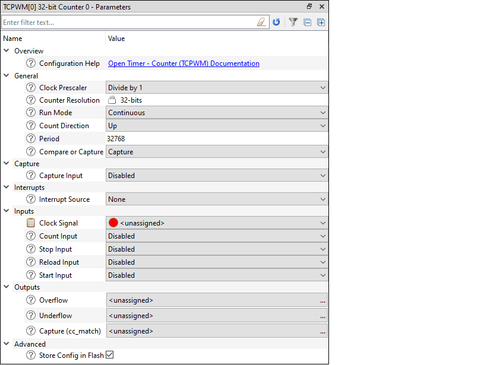
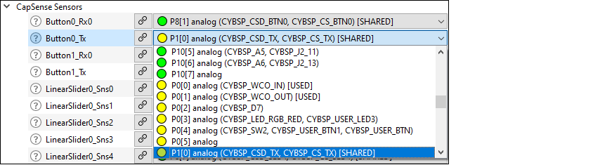
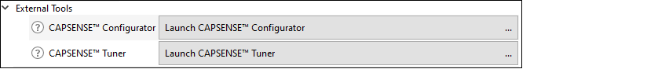
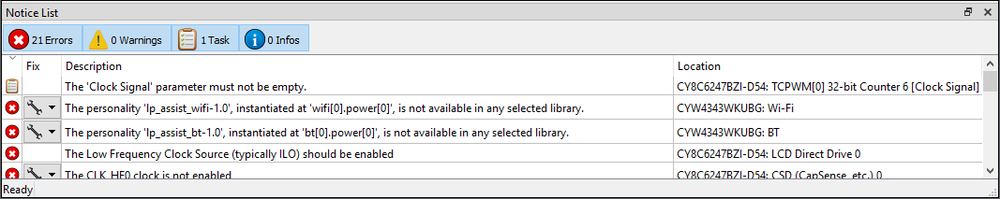
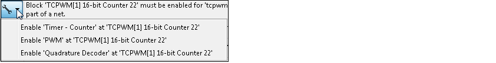
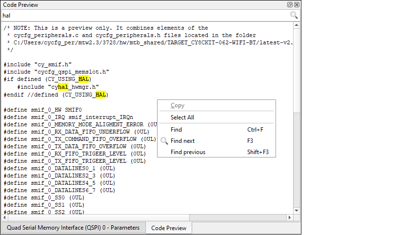

Panes
The Device Configurator tool contains the following primary panes that display information based on what is selected in a particular Resources tabs:
- Parameters pane – This pane shows the various parameters for any specific resource enabled in one of the tabs.
- Notice List – This pane shows any errors, warnings, tasks, and infos for the application.
- Code Preview pane – This pane shows a preview of the code that will be generated for the selected resource when you save the *.modus file.
Parameters pane
The Parameters pane contains all the parameters for a selected, enabled resource. This pane will show different parameters for each resource, grouped by various categories. For example, the parameters for the TCPWM peripheral are completely different than those for a pin resource. Some resources also provide a link to Launch other configurators. This pane contains a few tools:
- The filter box above the list of parameters allows you to limit the items shown in the pane.
- The reset button resets all parameter values to their defaults.
- The filter button toggles hides or shows non-editable parameters.
- The - and + buttons expand or collapse all nodes.

Configuration help
Nearly all resources provide a link to open the Peripheral Driver Library (PDL) documentation to the specific driver. This is the Doxygen-generated HTML file located in the installation directory. To see links to the documentation, simply highlight a resource; you do not need to enable it.
Parameter descriptions
As described under Icons, all parameters have a tooltip icon to indicate there is information about the parameter. Hover the mouse cursor over the icon to display a description of the parameter.
Parameter values
Different parameter types have different ways to specify a value, as follows:
- Pull-down Menu – For parameters with a specific set of values, use the pull-down menu to select the appropriate value.
- Selection Box – For parameters with a variable set of values, click the ellipsis […]
button to open a selection box. There, use the check boxes to select one or more
appropriate values for the parameter.Note: After selecting these parameter types, use the Go To button to jump to the selected resource.
- Check Box – For parameters with a true or false value, use the check box to enable or disable the parameter.
- Text Box – For parameters with editable values, type the value in the text box.
Signal Select Indicators

The signals have guidance icons next to them to indicate the status of the signal, as follows:
- Green – preferred
- Yellow – valid
- Red – constrained
After selecting one or more signals, use the Go To
 button to jump to the selected signal or open a dialog to select from multiple
signals.
button to jump to the selected signal or open a dialog to select from multiple
signals.
Launch other configurators

Click on [Launch < Configurator > . . .] to launch the configurator.
Notice List

Notices display in rows. Use the filters above the notices to show or hide different types of notices, as follows:
- Errors – These indicate there is at least one problem that must be addressed before you can build your application. Typical errors could include compiler build errors and connectivity errors.
- Warnings – These report unusual conditions that might indicate a problem, although you can usually build the application regardless.
- Tasks – These are actions you need to perform to resolve an issue, such as enabling a resource. If you save without resolving a task, it becomes an error.
- Infos – These are informational messages from the system to indicate something occurred.
The Notice List pane contains the following columns (each column header contains an arrow control to change the sorting of the notices in the table):
- Icon – Displays the icons for the error, warning, task, or info.
- Fix – This may display a wrench icon, which can be used to automatically address the required notice.
- Description – Displays a brief description of the notice.
- Location – Displays the specific line number or other location of the message, when applicable.
Fix a task/error
When a wrench icon displays in the Fix column, click on it and select the appropriate action from the pull-down menu. When all related issues have been addressed, the notice will be removed from the Notice List pane.

Copy a notice
You can copy a notice to your system’s clipboard using [Ctrl]+[c] or right-click and select Copy. Then, paste the notice text into an email, document, and so on.
Code Preview pane

You can select and copy code from this pane using [Ctrl]+[c] key or using the right-click menu option.
You can use the Search feature to find instances of specific terms.